직업상담사-2급 (2013-03-22 기출문제)
1과목: 직업상담학
1. Bordin의 정신역동적 직업상담에서 사용하는 기법이 아닌 것은?
- 명료화
- 비 교
- 소망-방어체계
- 반응 범주화
(정답률: 88%)

2. 진로 및 직업상담에 관한 설명으로 가장 적합한 것은?
- 의사결정은 진로상담의 핵심이다.
- 자기 탐색은 의사결정 이후의 단계에 속한다.
- 의사결정 이후 즉시 보유기술을 파악해야 한다.
- 공식적 자료인 심리검사의 자료를 최우선시 한다.
(정답률: 81%)
3. 일반적인 진로상담의 과정을 바르게 나열한 것은?
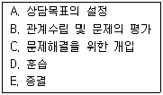
- A → B → C → D → E
- B → A → C → D → E
- A → B → D → C → E
- B → D → A → C → E
(정답률: 79%)
4. 인지행동적 접근에 해당하는 주된 상담기법을 바르게 짝지은 것은?
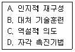
- A, B
- A, C
- C, D
- B, D
(정답률: 54%)
5. 내담자의 인지적 명확성을 사정할 때 고려할 사항과 가장 거리가 먼 것은?
- 직장을 처음 구하는 사람도 직장생활을 하던 중 직업전환을 하는 사람과 직업상담에 관한 접근은 동일하다.
- 내담자의 직장인으로서의 역할이 다른 생애 역할과 복잡하게 얽혀 있는 경우 생애 역할을 함께 고려한다.
- 직업상담에서는 내담자의 동기를 고려하여 상담이 이루어져야 한다.
- 내담자가 우울증과 같은 심리적 문제로 인지적 명확성이 부족한 경우 진로문제에 대한 결정은 당분간 보류하는 것이 좋다.
(정답률: 83%)
6. 생애진로사정에 관한 설명으로 가장 적합하지 않은 것은?
- 상담사와 내담자가 처음 만났을 때 이용할 수 있는 구조화된 면접기법이며 표준화된 진로사정 도구의 사용이 필수적이다.
- Adler의 심리학 이론에 기초하여 내담자와 환경과의 관계를 이해하는 데 도움을 주는 면접기법이다.
- 비판단적이고 비위협적인 대화 분위기로써 내담자와 긍정적인 관계를 형성하는 데 도움이 된다.
- 생애진로사정에서의 작업자, 학습자, 개인의 역할 등을 포함한 다양한 생애 역할에 대한 정보를 탐색해간다.
(정답률: 73%)
7. Super의 발달적 직업상담 단계의 의사결정에 이르는 단계를 바르게 나열한 것은?
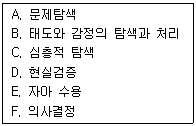
- A → B → C → D → E → F
- A → C → B → D → E → F
- A → C → E → D → B → F
- A → C → D → E → B → F
(정답률: 83%)
8. 직업상담사의 윤리에 관한 설명으로 옳은 것은?
- 내담자 개인 및 사회에 임박한 위험이 있다고 판단되더라도 개인정보와 상담내용에 대한 비밀을 유지해야 한다.
- 자기의 능력 및 기법의 한계를 넘어서는 문제에 대해서는 다른 전문가에게 의뢰해야 한다.
- 심층적인 심리상담이 아니므로 직업상담은 비밀 유지 의무가 없다.
- 상담을 통해 내담자가 도움을 받지 못하더라도 내담자보다 먼저 종결을 제안해서는 안된다.
(정답률: 83%)
9. 행동주의 직업상담에서 사용되는 학습촉진기법과 가장 거리가 먼 것은?
- 강화
- 내적 금지
- 사회적 모델링과 대리학습
- 변별학습
(정답률: 76%)
10. 신규 입직자나 직업인을 대상으로 조직문화, 인간관계, 직업예절, 직업의식과 직업관 등에 관한 정보를 제공하고 필요시 직업지도 프로그램에 참여하게 하는 상담은?
- 직업전환 상담
- 직업적응 상담
- 구인 · 구직 상담
- 경력개발 상담
(정답률: 86%)
11. 초기상담의 유형 중 정보지향적 면담에 관한 설명으로 틀린 것은?
- 재진술과 감정의 반향 등이 주로 이용된다.
- ‘예, 아니요’와 같은 특징하고 제한된 응답을 요구하는 것이다.
- ‘누가, 무엇을, 어디서, 어떻게’로 시작되는 개방형 질문이 사용된다.
- 상담의 틀이 상담자에게 초점을 맞추어져 진행된다.
(정답률: 65%)
12. 직업상담에서 특성-요인이론에 관한 설명으로 옳은 것은?
- 대부분의 사람들은 여섯 가지 유형의 성격 특성으로 분류될 수 있다.
- 각각의 개인은 신뢰할 만하고 타당하게 측정할 수 있는 고유한 특성의 집합이다.
- 개인은 일을 통해 개인적 욕구를 성취하도록 동기화되어 있다.
- 직업적 선택은 개인의 발달적 특성이다.
(정답률: 81%)
13. 다음 상황에 가장 적합한 상담기법은?
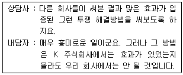
- 가정 사용하기
- 전이된 오류 정정하기
- 분류 및 재구성 기법 활용하기
- 저항감 재인식 및 다루기
(정답률: 61%)
14. 직업상담의 상담목표 설정에 관한 설명으로 가장 적합하지 않은 것은?
- 상담목표 설정은 상담전략 및 개입의 선택과 관련이 있다.
- 하위목표들은 보편적으로 이해되는 수준이면 된다.
- 내담자의 기대나 가치를 반영하여야 한다.
- 상담목표는 가능한 현실적이고 실현가능해야 한다.
(정답률: 79%)
15. 내담자에게 선정된 행동을 연습하거나 실천하도록 함으로써 내담자가 계약을 실행하는 기회를 최대화하도록 돕는 면담의 요소는?
- 감정이입
- 계약
- 직면
- 리허설
(정답률: 81%)
16. Williamson이 제시한 직업상담 과정의 6단계 중 전반부 4단계를 바르게 나열한 것은?
- 분석 → 진단 → 종합 → 처방
- 분석 → 종합 → 진단 → 처방
- 진단 → 분석 → 종합 → 처방
- 분석 → 진단 → 처방 → 종합
(정답률: 84%)
17. 내담자가 수집한 대안목록의 직업들이 실현 불가능할 때의 상담전략으로 틀린 것은?
- 브레인스토밍 과정을 통해 내담자의 대안작업 대다수가 부적절한 것을 명확히 한다.
- 최종 의사결정은 내담자가 해야 함을 확실히 한다.
- 내담자가 그 직업들을 시도해본 후 어려움을 겪게 되면 개입한다.
- 객관적인 증거나 논리에서 추출한 것에 대해서만 대화하여야 한다.
(정답률: 78%)
18. 게슈탈트 상담이론에 대한 설명으로 틀린 것은?
- 상담의 목표는 개인적 책임을 수용하는 것이다.
- 완전히 기능하는 사람을 강조한다.
- 여기 – 지금 (Here & Now) 의 경험을 강조한다.
- 성격은 자아(Self), 자아상(Self-image), 존재(Being)의 세 가지로 구성한다.
(정답률: 54%)
19. 장애를 가진 내담자를 위한 집단상담 프로그램에서 가장 중요한 활동은?
- 심리검사 실시
- 취업동기 평가
- 사회적응을 위한 상담
- 가족관계 확인
(정답률: 80%)
20. 다음 중 인지적 상담기법에 대한 설명으로 옳은 것은?
- Rogers, Beck, Adler, Ellis 등은 인지적 상담기법을 주장한 대표적인 사람이다.
- 인지적 상담기법을 이해하기 위해서는 자아, 초자아, 방어기제와 같은 개념을 명확히 구분해야 한다.
- Bandura는 이전 경험에 의해 형성된 스키마 때문에 자신과 현상에 대한 오류와 왜곡이 일어난다고 보았다.
- Ellis의 ABCD 모형에서 D는 내담자의 비합리적인 신념을 합리적 신념으로 바꾸기 위한 논박을 말한다.
(정답률: 69%)
2과목: 직업심리학
21. 다음 사례에서 검사-재검사 신뢰도 계수는?
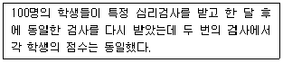
- 0.00
- -1.00
- +0.50
- +1.00
(정답률: 75%)
22. 진로성숙 검사도구(CMI)의 특징이 아닌 것은?
- 태도척도에는 선발척도와 상담척도 두 가지가 있다.
- 진로선택 과정에 대한 피험자의 태도와 진로결정에 영향을 미치는 성향적 반응경향성을 측정한다.
- 능력척도는 자기평가, 직업정보, 목표선정, 계획의 4개 영역만을 측정한다.
- 초등학교 6학년부터 고등학교 3학년을 대상으로 표준화되었다.
(정답률: 53%)
23. 직업선택에서 비현실성의 문제와 관련 없는 것은?
- 흥미와 적성에 일치하는 직업이 여러 가지라 어떤 직업을 선택해야 할지 결정하지 못한다.
- 자신의 적성수준보다 높은 적성을 요구하는 직업을 선택한다.
- 자신의 흥미와는 일치하지만, 자신의 적성수준보다는 낮은 적성을 요구하는 직업을 선택한다.
- 자신의 적성수준에는 맞는 선택을 하지만, 자신의 흥미와는 일치하지 않는 직업을 선택한다.
(정답률: 72%)
24. Selye 가 제시한 스트레스 반응 단계(일반적응증후)를 순서대로 바르게 나열한 것은?
- 소진 → 저항 → 경고
- 저항 → 경고 → 소진
- 소진 → 경고 → 저항
- 경고 → 저항 → 소진
(정답률: 74%)
25. 신입사원을 대상으로 부서 배치 후 6개월 이내에 자신이 도달하고 싶은 미래의 모습을 경력목표로 정하고 목표에 도달하기 위한 계획을 작성, 제출하도록 하여 자율적으로 경력목표를 달성할 수 있도록 지원하는 것은?
- 경력워크숍
- 직무순환
- 사내공모제
- 조기발탁제
(정답률: 71%)
26. 다음 중 편차지능지수(Deviation IQ)에 관한 설명으로 틀린 것은?
- 일반적으로 표준편차를 15 또는 16으로 사용한다.
- 정신연령(MA)과 신체연령(CA)의 비율이다.
- 편차는 지능지수의 분포형태와 관련된다.
- 집단용 지능검사에 사용된다.
(정답률: 62%)
27. 경력개발을 위한 교육훈련을 실시할 때 가장 먼저 고려해야 하는 사항은?
- 사용 가능한 훈련방법에는 어떤 것들이 있는지에 대한 고찰
- 현 시점에서 어떤 훈련이 필요할지에 대한 요구분석
- 훈련프로그램의 효과를 평가하고 개선할 수 있는 방안을 계획하고 수립
- 훈련방법에 따른 구체적인 프로그램 개발
(정답률: 80%)
28. 직업지도 시 직업적응 단계에서 이루어지는 것이 아닌 것은?
- 직업생활에 적응하기 위하여 노력한다.
- 여러 가지 직업 중에서 장 · 단점을 비교한다.
- 직업전환 및 실업위기에 대응하기 위한 자기만의 계획을 갖는다.
- 은퇴 후의 생애설계를 한다.
(정답률: 57%)
29. 스트레스와 직무수행 간의 관계에 대한 설명으로 옳은 것은?
- 스트레스가 많을수록 직무수행이 떨어지는 일차함수 관계이다.
- 어느 수준까지만 스트레스가 많을수록 직무수행이 떨어진다.
- 일정 시점 이후에 스트레스 수준이 증가하면 수행실적은 오히려 감소하는 역U형 관계이다.
- 스트레스와 직무수행은 관계가 없다.
(정답률: 78%)
30. Williamson이 분류한 임상적 상담 과정을 바르게 나열한 것은?
- 분석 → 종합 → 진단 → 예후 → 상담 → 추수
- 분석 → 진단 → 종합 → 상담 → 예후 → 추수
- 진단 → 분석 → 종합 → 예후 → 상담 → 추수
- 진단 → 종합 → 분석 → 상담 → 예후 → 추수
(정답률: 79%)
31. 동일한 채점자가 자유반응형 검사를 채점할 때 신뢰도를 높이기 위하여 배제해야 할 것과 관련이 없는 것은?
- 후광효과(Halo Effect)로 인한 오류
- 관용(Leniency)의 오류
- 혼착성(Confusion)의 오류
- 중앙집중경향(Concentraction Tendency)의 오류
(정답률: 54%)
32. 다음 중 직무분석의 목적으로 가장 적합한 것은?
- 해당 직무에서 어떤 활동이 이루어지고 작업조건이 어떠한지를 기술하고, 직무를 수행하는 사람에게 요구되는 지식, 기술, 능력 등의 정보를 활용하는 데 있다.
- 조직 내에서 직무들의 내용과 성질이 고려하여 직무들 간의 상대적인 가치를 결정하여 여러 직무들에 대해 서로 다른 임금수준을 결정하는 데 있다.
- 개인이 직무를 얼마나 잘 수행하는지를 알아내어 인사관리와 개인발전 및 연구에 활용하는 데 있다.
- 직무수행의 결과를 예측하기 위하여 여러 직무들의 준거를 개발하고 선발결정을 하는 데 있다.
(정답률: 76%)
33. 직무분석에 필요한 직무정보를 얻는 출처와 가장 거리가 먼 것은?
- 직무 현직자
- 현직자의 상사
- 직무 분석가
- 과거 직무 수행자
(정답률: 64%)
34. 진로발달에서 맥락주의(contextualism)에 관한 설명으로 틀린 것은?
- 행위는 맥락주의의 주요 관심대상이다.
- 맥락주의에서는 개인보다는 환경의 영향을 강조한다.
- 행위는 인지적 · 사회적으로 결정되며 일상의 경험을 반영하는 것이다.
- 진로연구와 진로상담에 대한 맥락상의 행위설명을 확립하기 위하여 고안된 방법이다.
(정답률: 70%)
35. Holland의 직업선택 이론에 관한 설명으로 옳은 것은?
- RIE 코드가 RSE 코드보다 일관성이 높다.
- 관습적 유형(Conventional Type)은 기계, 도구, 동물에 관한 체계적인 조작활동을 좋아하고 사회적 기술이 부족하다.
- 실재적 유형(Realistic Type)에 맞는 대표적인 직업은 공인회계사, 사서, 경리사원 등이다.
- 탐구적 유형(Investigative Tyepe)의 성격특징은 표현이 풍부하고 독창적이며 비순응적이다.
(정답률: 71%)
36. 직업발달이론 중 Maslow의 욕구위계이론에 기초하여 유아기의 경험과 직업선택에 관한 5가지 가설을 수립한 학자는?
- Roe
- Gottfredson
- Holland
- Tuckman
(정답률: 80%)
37. 회사에서 인사선발 및 배치와 관련해서 심리검사를 실시하는 경우, 이는 심리검사의 용도 중 무엇에 해당하는가?
- 진 단
- 연 구
- 조 사
- 예 측
(정답률: 65%)
38. Krumboltz의 사회학습이론에 관한 설명으로 틀린 것은?
- 진로결정에 영향을 미치는 요인으로 유전적 요인, 환경적 조건, 학습 경험, 과제접근기술 등 4가지를 제시하고 있다.
- 강화이론, 고전적 행동주의이론, 인지적 정보처리 이론에 기원을 두고 있다.
- 진로결정 요인들이 상호작용하여 자기관찰 일반화와 세계관 일반화를 형성한다.
- 학과 전환 등 진로의사결정과 관련된 개인의 행동에 대해서는 관심을 두지 않고 있다.
(정답률: 78%)
39. 지능지수(IQ)의 계산방법으로 옳은 것은?
- Z점수에 일정수의 편차를 곱하고 평균치를 100으로 정하여 더한 것이다.
- T점수에 일정수의 편차를 곱하고 평균치를 100으로 정하여 더한 것이다.
- Z점수에 일정수의 편차를 더하고 평균치를 100으로 정하여 더한 것이다.
- T점수에 일정수의 편차를 곱하고 평균치를 100으로 정하여 곱한 것이다.
(정답률: 52%)
40. 조직 감축에서 살아남은 구성원들이 조직에 대해 보이는 전형적인 반응은?
- 살아남은 구성원들은 조직에 대해 높은 신뢰감을 가지고 있다.
- 더 많은 일을 해야 하기 때문에 과로하며 종종 불이익도 감수하려고 한다.
- 살아남은 구성원들은 다른 직무나 낮은 수준의 직무로 이동하는 것을 거부한다.
- 조직 감축에서 살아남은 데 만족하여 조직 몰입을 더욱 많이 한다.
(정답률: 81%)
3과목: 직업정보론
41. 일반적인 직업정보 처리과정을 바르게 나열한 것은?
- 수집 → 제공 → 분석 → 가공 → 평가
- 수집 → 가공 → 제공 → 분석 → 평가
- 수집 → 평가 → 가공 → 제공 → 분석
- 수집 → 분석 → 가공 → 제공 → 평가
(정답률: 80%)
42. 한국표준직업분류에서 정의하는 직업에 해당하는 것은?
- 레스토랑에서 아르바이트를 하는 경우
- 경마, 경륜, 복권 등에 의한 배당금이나 주식투자에 의한 시세차익이 있는 경우
- 자기 집에 가사활동에 전념하는 경우
- 연금법, 국민기초생활보장법, 국민연금법 및 고용보험법 등의 사회보장이나 민간보험에 의한 수입이 있는 경우
(정답률: 81%)
43. 한국표준산업분류의 분류 목적에 대한 설명으로 틀린 것은?
- 생산단위가 주로 수용하는 산업 활동을 그 유사성에 따라 체계적으로 유형화 한다.
- 산업 활동에 의한 통계 자료의 수집, 제표, 분석 등을 위해서 활동카테고리를 제공한다.
- 통계법에서는 산업통계 자료의 정확성, 비교성을 위하여 모든 통계작성기관이 이를 선택적으로 사용하도록 규정하고 있다.
- 일반 행정 및 산업정책관련 법령에서 적용대상 산업영역을 한정하는 기준으로 준용하고 있다.
(정답률: 67%)
44. 다음은 어떤 자격등급의 결정기준인가?
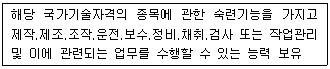
- 기능장
- 기사
- 산업기사
- 기능사
(정답률: 66%)
45. 다음은 직무분석용어 중 무엇에 관한 설명인가?
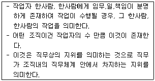
- 과업(Take)
- 직위(Position)
- 직무(Job)
- 직업(Occupation)
(정답률: 71%)
46. 공공직업정보의 일반적인 특성에 대한 설명으로 틀린 것은?
- 전 산업 및 직종을 대상으로 지속적으로 조사 · 분석한다.
- 보편적 항목으로 이루어진 기초정보가 많다.
- 관련 직업간 비교가 용이하다.
- 단시간에 조사하고 특정 목적에 맞게 직종을 제한적으로 선택한다.
(정답률: 82%)
47. 다음은 어떤 고용보험사업에 관한 설명인가?
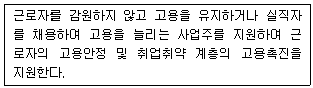
- 실업급여사업
- 고용안정사업
- 취업알선사업
- 직업상담사업
(정답률: 85%)
48. 다음 국가기술자격종목 중 응시자격에 제한이 있는 것은?
- 스포츠경영관리사
- 국제의료관광코디네이터
- 사회조사분석사 2급
- 소비자전문상담사 2급
(정답률: 73%)
49. 국가기술자격종목과 그 직무분야의 연결이 옳지 않은 것은?
- 직업상담사 2급 – 사회복지 · 종교
- 소비자전문상담사 2급 – 경영 · 회계 · 사무
- 세탁기능사 – 경비 · 청소
- 컨벤션기획사 2급 – 숙박 · 여행 · 오락 · 스포츠
(정답률: 71%)
50. 다음은 한국직업사전에 수록된 어떤 직업에 관한 설명인가?
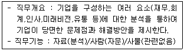
- 직무분석가
- 시장조사분석가
- 환경영향평가원
- 경영컨설턴트
(정답률: 64%)
51. 직업능력개발계좌제에 대한 설명으로 틀린 것은?(오류 신고가 접수된 문제입니다. 반드시 정답과 해설을 확인하시기 바랍니다.)
- 단위기간이란 훈련개시일로부터 매 1개월을 단위로 하는 기간을 말한다.
- 수료란 소정훈련일수의 100분의 80 이상 출석한 것을 말한다. (인터넷원격훈련과정 제외).
- 계좌의 유효기간은 계좌 발급일부터 1년으로 한다.
- 계좌적합훈련과정의 인정 요건은 훈련기간과 훈련시간은 각각 15일 이상이고 60시간 이상이어야 한다.
(정답률: 62%)
52. 한국직업정보시스템(워크넷 직업 진로)의 직업정보 검색방법 중 조건별 검색의 검색 항목으로 옳은 것은?
- 평균학력, 근로시간
- 근로시간, 평균연봉
- 평균연봉, 직업전망
- 직업전망, 평균학력
(정답률: 63%)
53. 한국직업전망에 관한 설명으로 틀린 것은?(관련규정 개정전 문제로 기존 정답은 3번입니다. 여기서는 3번을 누르면 정답 처리 됩니다.)
- 향후 5년간 직업에 대한 전망을 제공하고 있다.
- 해당 직업의 승진체계와 이 · 전직을 할 수 있는 분야 및 직업 등을 수록하였다.
- 해당 직업에 대한 고용전망은 “감소, 현 상태 유지, 증가” 3가지 수준으로 구분하여 제시하고 있다.
- 직업정보와 관련된 협회, 공공기관, 정부부처, 학회 등의 전화번호와 홈페이지주소를 수록하였다.
(정답률: 78%)
54. 한국표준산업분류에서 하나 이상의 장소에서 이루어지는 단일 산업활동의 통계단위는?
- 기업집단
- 기업체 단위
- 활동유형단위
- 지역단위
(정답률: 65%)
55. 한국표준산업분류의 전용원칙에 관한 설명으로 틀린 것은?
- 생산단위는 산출물뿐만 아니라 투입물과 생산공정 등을 함께 고려하여 그들의 활동을 가장 정확하게 설명된 항목에 분류해야 한다.
- 복합적인 활동단위는 우선적으로 최상급 분류단계(대분류)를 정확히 결정하고, 순차적으로 중, 소, 세, 세세분류 단계 항목을 결정하여야 한다.
- 산업활동이 결합되어 있는 경우에는 그 활동단위의 주된 활동에 따라서 분류하여야 한다.
- 수수료 또는 계약에 의하여 활동을 수행하는 단위는 자기계정과 자기책임 하에서 생산하는 단위와 별도의 항목으로 분류되어야 한다.
(정답률: 76%)
56. 고용노동부에서 실시하고 있는 사업체노동력조사에 관한 설명으로 틀린 것은?
- 현원, 빈 일자리 및 입 이직에 관한 사항과 고용, 임금 및 근로시간에 관한 사항을 조사한다.
- 조사대상은 종사자 1인 이상 민간사업체 및 공공기관 중 층화계통 추출방법으로 추출한다.
- 거시경제지표 산정 및 임금 · 고용 관련 정책의 기초자료를 제공하는 데 목적이 있다.
- 분기별로 조사하여 사업체 노동력의 변동추이를 파악한다.
(정답률: 52%)
57. 한국표준직업분류상 특정 직종의 분류 요령에 대한 설명으로 틀린 것은?
- 행정 관리 및 입법기능을 수행하는 자는 ‘대부분 1 관리자’에 분류된다.
- 반장 등과 같이 주로 수행된 일의 전문, 기술적인 통제업무를 수행하는 감독자는 그 감독되는 근로자와 동일 직종으로 분류된다.
- 연구 및 개발업무 종사자는 ‘대분류 2 전문가 및 관련 종사자’에서 그 전문분야에 따라 분류된다.
- 관공서의 기관장은 직급에 따라 관리자 직군으로 분류된다.
(정답률: 48%)
58. 워크넷 직업 진로에서 제공하는 청소년 직업흥미검사의 하위척도가 아닌 것은?
- 활 동
- 자신감
- 직 업
- 가치관
(정답률: 64%)
59. 워크넷(구직)에서 ‘원하는 일자리 조건’ 검색 기준으로 틀린 것은?
- 근로시간
- 근무지역
- 희망직종
- 희망임금
(정답률: 54%)
60. 한국직업사전의 부가 직업정보 중 “숙련기간”에 포함되지 않는 것은?
- 해당 직업에 필요한 자격 · 면허를 취득하는 취업 전 교육 및 훈련기간
- 취업 후에 이루어지는 관련 자격 · 면허 취득교육 및 훈련기간
- 해당 직무를 평균적으로 수행하기 위한 각종 교육 훈련기간, 수습교육, 기타 사내교육, 현장훈련
- 해당 직무를 평균적인 수준 이상으로 수행하기 위한 향상훈련
(정답률: 66%)
4과목: 노동시장론
61. 다음 중 노동의 수요 · 공급에 대한 설명으로 틀린 것은?
- 총비용 중 노동비용(임금)의 비중이 클수록 노동수요의 탄력성은 커진다.
- 완전경쟁시장에서 노동수요를 결정하는 것은 노동의 한계생산물가치이다.
- 임금 상승은 여가의 기회비용을 낮춤으로써 여가에 대한 선호를 증대시켜 노동공급을 감소시킨다.
- 자본소득, 주소득자 외 다른 가족구성원의 소득이 증가하게 되면 노동공급시간이 감소하는 경향이 있다.
(정답률: 53%)
62. 다음은 어떤 형태의 능률급인가?
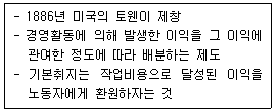
- 표준시간제
- 이익분배제
- 할시제
- 테일러제
(정답률: 80%)
63. 산업혁명 이후 영국에서 가장 일찍 발달한 노동조합형태는?
- 산업별 노동조합
- 기업별 노동조합
- 직업(종)별 노동조합
- 일반 조합
(정답률: 70%)
64. 1998~1999년 경제위기 기간에 나타난 우리 노동시장의 특징과 가장 거리가 먼 것은?
- 해고분쟁의 증가
- 외국인 노동자 대량유입
- 근로자의 평균근속기간 감소
- 임시직 · 일용직 고용비중의 증가
(정답률: 71%)
65. 다음 ( )에 알맞은 것은?
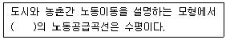
- A. Marshall
- J.R. Hicks
- W.A. Lewis
- A.Smith
(정답률: 53%)
66. 다음 중 노동조합에 관한 설명으로 옳은 것은?
- 노조부문과 비노조부문 간의 임금격차를 해소 시킨다.
- 집단적 소리로서의 기능을 하여 비효율을 제거하고 생산성을 증진시킬 수 있다.
- 시장기능에 의해 결정된 임금수준을 반드시 수용한다.
- 노동조합의 임금수준은 일반적으로 비노조부문의 임금수준에 비해 낮게 책정되어 있다.
(정답률: 70%)
67. 효율임금정책이 높은 생산성을 가져오는 원인에 관한 설명으로 틀린 것은?
- 고임금은 노동자의 직장상실비용을 증대시켜서 작업중에 태만하지 않게 한다.
- 고임금 지불기업은 그렇지 않은 기업에 비해 신규노동자의 훈련에 많은 비용을 지출한다.
- 고임금은 노동자의 기업에 대한 충성심과 귀속감을 증대시킨다.
- 고임금 지불기업은 신규채용시 지원노동자의 평균자질이 높아져 보다 양질의 노동자를 고용할 수 있다.
(정답률: 75%)
68. 실업급여의 효과에 대한 설명으로 가장 적합한 것은?
- 노동시간을 늘리고 경제활동참가도 증대시킨다.
- 노동시간을 단축시키고 경제활동참가도 감소시킨다.
- 노동시간의 증 · 감은 불분명하지만 경제활동참가는 증대시킨다.
- 노동시간, 경제화동참가 모두 불분명하다.
(정답률: 74%)
69. 다음 중 최저임금제 도입의 직접적인 목적과 가장 거리가 먼 것은?
- 고용 확대
- 구매력 증대
- 생계비 보장
- 경영합리화 유도
(정답률: 65%)
70. 다음 중 연공급(Seniority-Based Pay)의 장점이 아닌 것은?
- 정기승급을 실시함에 따라 생활의 안정감과 장래에 대한 기대를 가질 수 있다.
- 위계질서의 확립이 용이하다.
- 동기부여 효과가 강하다.
- 근로자에 대한 교육훈련의 효과를 높일 수 있다.
(정답률: 65%)
71. 전체 근로자의 20%가 매년 새로운 일자리를 찾고 있으며 직업탐색기간이 평균 3개월이라면 마찰적 실업률은?
- 1%
- 5%
- 6%
- 10%
(정답률: 71%)
72. 다음 중 마찰적 실업에 관한 설명으로 옳은 것은?
- 경기침체로부터 오는 실업이다.
- 구인자와 구직자 간의 정보의 불일치로 인해 발생한다.
- 기업이 요구하는 기술수준과 노동자가 공급하는 기술수준의 불합치에 의해 발생한다.
- 노동절약적 기술 도입으로 해고가 이루어짐으로써 발생한다.
(정답률: 77%)
73. 다음 중 노동수요의 특징이 아닌 것은?
- 유발수요
- 파생수요
- 결합수요
- 가수요
(정답률: 72%)
74. 다음 중 사회적 비용이 상대적으로 가장 적게 유발되는 실업은?
- 경기적 실업
- 계절적 실업
- 마찰적 실업
- 구조적 실업
(정답률: 73%)
75. 노동시장이 완전경쟁인 경우와 수요독점인 경우의 비교로 옳은 것은?
- 수요독점인 경우가 완전경쟁인 경우에 비해 임금수준은 높게 되고 고용수준은 낮게 된다.
- 수요독점인 경우가 완전경쟁인 경우에 비해 임금수준은 낮게 되고 고용수준은 높게 된다.
- 수요독점인 경우가 완전경쟁인 경우에 비해 임금수준과 고용수준 모두 높게 된다.
- 수요독점인 경우가 완전경쟁인 경우에 비해 임금수준과 고용수준 모두 낮게 된다.
(정답률: 44%)
76. 사회민주주의형 정치조직이 무력하여 국가차원보다 개별기업단위의 복지제도가 광범위하게 시행되고 있는 마이크로 코포라티즘(Micro-corporatism)이 특징인 국가는?
- 스페인
- 핀란드
- 일 본
- 독 일
(정답률: 63%)
77. 다음 중 신고전학파가 주장하는 노동조합의 사회적 비용이 아닌 것은?
- 비노조화의 임금격차와 고용저하에 따른 배분적 비효율
- 경직적 인사제도에 의한 기술적 비효율
- 파업으로 인한 생산중단에 따른 생산적 비효율
- 작업방해에 의한 구조적 비효율
(정답률: 58%)
78. 가계생산(Household Production)과 가계소비(Household Consumption)에 관한 설명으로 틀린 것은?
- 가계생산함수에서는 남편과 아내의 소비에 대한 효용이 결합적으로 도출된다고 가정한다.
- 가계생산함수에서는 가족들이 소비하는 재화의 많은 부분은 가족 내에서 생산된다고 가정한다.
- 기혼남성의 임금이 오를 경우 시간 집약적 상품의 소비를 줄이게 된다.
- 기혼여성의 임금이 오를 경우 생산과 소비 양면에서 소득효과가 발생한다.
(정답률: 55%)
79. 다음 중 헤도닉 임금이론의 가정으로 틀린 것은?
- 직장의 다른 특성은 동일하며 산업재해의 위험도도 동일하다.
- 노동자의 효용을 극대화하며 노동자 간에는 산업안전에 관한 선호의 차이가 존재한다.
- 기업은 좋은 노동조건을 위해 산업안전에 투자해야 한다.
- 노동자는 정확한 직업정보를 갖고 있으며 직업간에 자유롭게 이동할 수 있다.
(정답률: 66%)
80. 임금-물가 악순환설, 지불능력설, 한계생산력설 등에 영향을 미친 임금결정이론은?
- 임금생존비설
- 임금철칙설
- 노동가치설
- 임금기금설
(정답률: 68%)
5과목: 노동관계법규
81. 고용정책기본법상 고용노동부장관이 실시 할 수 있는 실업대책사업에 해당되지 않는 것은?
- 고용촉진과 관련된 사업을 하는 자에 대한 대부
- 실업자의 취업촉진을 위한 훈련의 실시와 훈련에 대한 지원
- 실업의 예방, 실업자의 재취업 촉진, 그 밖에 고용안정을 위한 사업을 하는 자에 대한 지원
- 실업자에 대한 생계비, 의료비(가족의 의료비 포함), 주택매입자금 등의 지원
(정답률: 75%)
82. 고용보험법상 사업주에게 고용창출에 대한 지원으로 임금의 일부를 지원할 수 있는 경우가 아닌 것은?
- 정기적인 교육훈련 · 안식휴가 부여, 교대근로 또는 근로시간 단축 등을 통하여 실업자를 고용함으로써 근로자 수가 증가한 경우
- 고용노동부장관이 정하는 시설을 설치 · 운영하여 고용환경을 개선하고 실업자를 고용하여 근로자 수가 증가한 경우
- 직무의 분할, 근무체계 개편 또는 시간제직무개발 등을 통하여 실업자를 근로계약기간을 정하고 시간제로 근무하는 형태로 하여 새로 고용하는 경우
- 고용보험위원회에서 심의 · 의결한 성장유망업종에 해당하는 창업기업이 실업자를 고용하는 경우
(정답률: 54%)
83. 남녀고용평등과 일 가정 양립 지원에 관한 법률상 남녀의 평등한 기회보장 및 대우에 관한 설명으로 옳은 것은?
- 사업주는 여성 근로자를 모집 · 채용할 때 그 직무의 수행에 필요한 경우라 하더라도 용모 · 키 · 체중 등의 신체적 조건을 제시하거나 요구하여서는 아니 된다.
- 사업주는 동일한 사업 내의 동일 가치 노동에 대하여는 동일한 임금을 지급하여야 하며, 동일가치 노동의 기준은 직무 수행에서 요구되는 기술, 노력, 책임 및 작업 조건 등으로 한다.
- 사업주가 임금차별을 목적으로 설립하였더라도 별개의 사업은 동일한 사업으로 볼 수 없다.
- 사업주는 근로자의 해고에서 남녀를 차별하여서는 아니 되나 정년 · 퇴직의 경우 차별이 있더라도 남녀차별로 보지 아니한다.
(정답률: 59%)
84. 노동기본권에 관하여 헌법에 몇시된 내용으로 틀린 것은?
- 공무원인 근로자는 법률이 정하는 자에 한하여 단결권 · 단체교섭권 및 단체행동권을 가진다.
- 근로자는 근로조건의 향상을 위하여 자주적인 단결권 · 단체교섭권 및 단체행동권을 가진다.
- 법률이 정하는 주요방위산업에 종사하는 근로자의 단체행동권은 법률이 정하는 바에 의하여 이를 제한하거나 인정하지 아니할 수 있다.
- 공익사업에 종사하는 근로자의 단체행동권은 법률이 정하는 바에 의하여 이를 제한하거나 인정하지 아니할 수 있다.
(정답률: 63%)
85. 고용상 연령차별금지 및 고령자고용촉진에 관한 법률상 고령자 기준고용률이 그 사업장의 상시근로자수의 100분의 2에 해당하는 사업의 종류는?
- 제조업
- 운수업
- 부동산 및 임대업
- 건설업
(정답률: 78%)
86. 근로자직업능력개발법상 훈련계약에 관한 설명으로 틀린 것은?
- 사업주와 직업능력개발훈련을 받으려는 근로자는 직업능력개발훈련에 따른 권리 · 의무 등에 관하여 훈련계약을 체결하여야 한다.
- 기준근로시간 외의 훈련시간에 대하여는 생산시설을 이용하거나 근무장소에서 하는 직업능력개발훈련의 경우를 제외하고는 연장근로와 야간근로에 해당하는 임금을 지급하지 아니할 수 있다.
- 훈련계약을 체결할 때에는 해당 직업능력개발훈련을 받는 사람이 직업능력개발훈련을 이수한 후에 사업주가 지정하는 업무에 일정 기간 종사하도록 할 수 있다. 이 경우 그 기간은 5년 이내로 하되, 직업능력개발훈련 기간의 3배를 초과할 수 없다.
- 훈련계약을 체결하지 아니한 경우에 고용근로자가 받은 직업능력개발훈련에 대하여는 그 근로자가 근로를 제공한 것으로 본다.
(정답률: 48%)
87. 고용보험법상 실업급여를 지급받을 권리는 몇 년간 행사하지 아니하면 시효로 소멸하는가?
- 1년
- 2년
- 3년
- 5년
(정답률: 68%)
88. 근로기준법상 예고해고의 적용예외에 해당하지 않는 근로자는?(관련 규정 개정전 문제로 여기서는 기존 정답인 3번을 누르면 정답 처리됩니다. 자세한 내용은 해설을 참고하세요.)
- 일용근로자로서 3개월을 계속 근무하지 아니한 자
- 월급근로자로서 6개월이 되지 못한 자
- 계절적 업무에 4개월을 초과하는 기간을 정하여 사용된 자
- 2개월 이내의 기간을 정하여 사용된 자
(정답률: 57%)
89. 고용보험법상 육아휴직 급여에 관한 설명으로 옳은 것은?
- 피보험자가 「남녀고용평등 및 일 가정 양립지원에 관한 법률」에 따른 육아휴직을 10일 이상 부여받은 경우에 육아휴직 급여를 지급한다.
- 같은 자녀에 대하여 피보험자인 배우자가 30일 이상의 육아휴직을 부여받은 경우에 육아휴직 급여를 지급한다.
- 피보험자가 육아휴직을 시작한 날 이전에 피보험 단위 기간이 통산하여 90일 이상인 경우에 육아휴직 급여를 지급한다.
- 피보험자가 육아휴직 급여 기간 중에 그 사업에서 이직한 경우에는 그 이직하였을 때부터 육아휴직 급여를 지급하지 아니한다.
(정답률: 56%)
90. 근로기준법상 사용증명서에 관한 설명으로 틀린 것은?
- 사용증명서를 청구할 수 있는 자는 계속하여 30일 이상 근무한 근로자이다.
- 사용증명서를 청구할 수 있는 기한은 퇴직 후 3년 이내로 한다.
- 사용자는 근로자가 퇴직한 후라도 사용증명서를 청구하면 사실대로 적은 증명서를 즉시 내주어야 한다.
- 사용증명서의 법적 기재사항은 청구여부에 관계없이 기재해야 한다.
(정답률: 65%)
91. 근로기준법상 임금의 비상시 지급이 허용되지 않는 경우는?
- 근로자가 혼인한 경우
- 근로자의 수입으로 생계를 유지하는 자가 출산한 경우
- 근로자의 수입으로 생계를 유지하는 자가 질병에 걸린 경우
- 근로자 본인이 부득이한 사유로 3일 이상 귀향하게 되는 경우
(정답률: 68%)
92. 고용정책기본법상 명시된 취업기회의 균등한 보장과 관련하여 금지하고 있는 차별금지사유가 아닌 것은?
- 국 적
- 사회적 신분
- 출신학교
- 병력(病歷)
(정답률: 55%)
93. 근로자직업능력개발법상 직업능력개발훈련의 목적에 따라 구분되는 훈련이 아닌 것은?
- 혼합훈련
- 향상훈련
- 전직훈련
- 양성훈련
(정답률: 71%)
94. 직업안정법상 직업정보제공사업자의 준수사항으로 틀린 것은?
- 직업정보제공매체의 구인 · 구직의 광고에는 구인 · 구직자 및 직업정보제공사업자의 주소 또는 전화번호를 기재할 것
- 구인자의 연락처가 사서함으로 표시된 구인광고를 게재하지 아니할 것
- 광고문에 취업상담 · 추천 등의 표현을 사용하지 아니할 것
- 구직자의 이력서 발송을 대행하거나 구직자에게 취업추천서를 발부하지 아니할 것
(정답률: 68%)
95. 근로기준법상 평균임금에 의해 계산되는 것은?
- 해고예고수당
- 연장근로수당
- 휴업수당
- 휴일근로수당
(정답률: 57%)
96. 남녀고용평등과 일 · 가정 양립 지원에 관한 법률상 직장 내 성희롱 예방조치에 관한 설명으로 틀린 것은?
- 상시 10명 미만의 근로자를 고용하는 사업장의 경우 간접교육(홍보물 게시 배포)도 가능하다.
- 성희롱 예방 교육 내용에는 직장 내 성희롱 발생시 처리절차와 조치기준, 고충상담 및 구제절차 등이 있다.
- 단순한 교육자료 배포나 게시판 공지 등으로 교육 내용이 제대로 전달되었는지 확인이 불가능한 경우 예방 교육을 한 것으로 보지 않는다.
- 직장 내 성희롱 예방을 위한 교육은 연 2회 이상 실시하여야 한다.
(정답률: 76%)
97. 남녀고용평등과 일 · 가정 양립 지원에 관한 법률상 차별에 해당하지 않는 것은?
- 성별을 사유로 합리적인 이유 없이 근로조건을 달리 하는 것
- 가족 안에서의 지위를 사유로 합리적인 이유 없이 근로조건을 달리 하는 것
- 여성 근로자의 임신 출산 수유 등 모성보호를 위한 조치를 하는 경우
- 사업주가 채용조건이나 근로조건은 동일하게 적용하더라도 그 조건을 충족할 수 있는 남성 또는 여성이 다른 한 성에 비하여 현저히 적고 그에 따라 특정 성에게 불리한 결과를 초래하며 그 조건이 정당한 것임을 증명할 수 없는 경우
(정답률: 69%)
98. 직업안정법상 근로자공급사업에 관한 설명으로 틀린 것은?
- 근로자공급사업 허가의 유효기간은 3년이다.
- 근로자공급사업 허가의 유효기간이 끝난 후 계속하여 근로자공급사업을 하려는 자는 연장허가를 받아야 하며, 이 경우 연장허가의 유효기간은 연장 전 허가의 유효기간이 끝나는 날부터 3년으로 한다.
- 국내 근로자공급사업의 허가를 받을 수 있는 자는 「노동조합 및 노동관계조정법」에 따른 노동조합이다.
- 연예인을 대상으로 하는 국외 근로자공급사업의 허가를 받을 수 있는 자는 「민법」에 따른 비영리법인이 아니어야 한다.
(정답률: 58%)
99. 고용보험법상 직업능력개발훈련을 실시하는 사업주에 대하여 비용을 지원하는 경우 고용노동부장관이 정하여 고시하는 바에 따라 지원수준을 높게 정할 수 있는 대상자로 틀린 것은?
- 일용근로자
- 「근로기준법」에 따른 단기간근로자
- 「산업재해보상보험법」에 따른 특수형태근로종사자
- 「기간제 및 단시간근로자 보호 등에 관한 법률」에 따른 기간제근로자
(정답률: 62%)
100. 고용상 연령차별금지 및 고령자고용촉진에 관한 법률상 우선고용직종에 관한 설명으로 틀린 것은?
- 고용노동부장관은 고용정책심의회 심의를 거쳐 고령자와 준고령자를 고용하기에 적합한 직종을 선정하고, 선정된 우선고용직종을 고시하여야 한다.
- 공공기관의 장은 그 기관에 우선고용직종이 신설되어 신규인력을 채용하는 경우 고령자와 준고령자를 우선적으로 고용하도록 노력하여야 한다.
- 고용노동부장관은 우선고용직종의 개발 등 고령자와 준고령자의 고용촉진에 필요한 사항에 대하여 조사 · 연구하고 관련 자료를 정리 · 배포하여야 한다.
- 공공기관의 장은 그 기관의 우선고용직종에 관한 고용현황을 매년 고용노동부장관에게 제출하여야 한다.
(정답률: 53%)